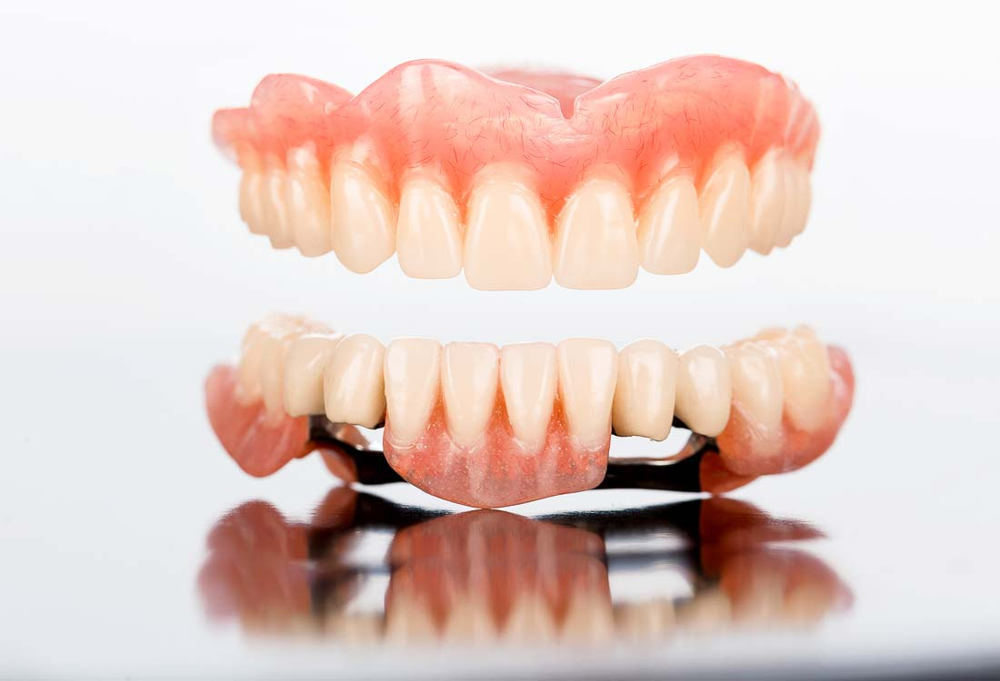

Dantų protezavimas | Išimami ir tobulesni minkšti dantų protezai
 Šiaulių ImplantologijosKlinika - Dvaro g. 98 +370 609 66644 EN LT Gydytojai Paslaugos Galerija Kontaktai Registracija +370 609 66644 Vaikų odontologija Ortodontija Dantų protezavimas Profesionali burnos higiena Dantų balinimas Endodontija Estetinis plombavimas Chirurgija Implantavimas
Dantų protezavimas
Dantų protezavimas – tai neskausminga procedūra, kurios metu yra atkuriami danties audiniai, šiems esant pažeistiems ar praradusiems estetinę išvaizdą. Šiuolaikinėje odontologijoje protezai beveik nesiskiria nuo natūralių dantų, todėl sukuria ypač natūralios šypsenos efektą. Klinikoje siūlomi tobulesni dantų protezai suteikia galimybę vėl šypsotis ir atstatyti prarastą kramtymo funkciją. Klinikoje dantų protezavimui yra naudojamos skirtingos protezų rūšys, kurios taip pat šiek tiek skiriasi savo kaina: daugiausia dirbama su bemetale cirkonio, presuota, lauko špato ir emax keramikų rūšimis. Taip pat klinikoje dirbama su silikoniniais dantų protezais, išimamais protezais, dantų lankais bei protezais, fiksuotais ant implantų. Jeigu pacientas neturi daugumos arba visų dantų, kurių neįmanoma atstatyti, arba esami dantys yra nudilę, dantų protezavimas gali tapti sprendimu, sugrąžinančiu pasitikėjimą savimi ir savo šypsena.
Minkšti dantų protezai
Dantų protezavimui gali būti naudojami minkšti dantų protezai, kurie yra laikomi pranašesniais už paprastas plastikines plokšteles, kadangi yra pagaminti minkštu pagrindu, yra lankstūs, su jais patogu kramtyti. Bet kokios rūšies protezus yra būtina tinkamai prižiūrėti, tokiu būdu prailginant jų gyvavimo laiką. Dantų protezavimas pensininkams palengvina jų kasdienybę ir gali sumažinti įvairius nemalonius pojūčius kaip sąnario traškėjimas ar ūžesiai ausyse. Taip pat protezų kompensavimas pensininkams iš Privalomojo sveikatos draudimo biudžeto fondo šiems suteikia galimybę sutaupyti.
Išimami dantų protezai
Viena iš išimamų dantų protezų rūšių – lanko atraminis protezas. Jis pasižymi mažesniu atraminių dantų apkrovimu. Išimamų dantų protezų kaina klinikoje yra nuo 200 eurų, tačiau kartais yra vykdomos akcijos, kurių metu įvairius dantų protezus galima įsigyti pigiau. Netekus dantų išimami dantų protezai tampa puikiu pasirinkimu, kuris padeda atstatyti žandikaulio sąnario funkciją, kramtymo efektyvumą bei estetinį burnos ertmės vaizdą. Dantų protezavimas suteikia galimybę susigrąžinti šypseną ir vėl pasitikėti savimi.
Dantų protezavimas išsimokėtinai
Klinikoje gali būti taikomas dantų protezavimas išsimokėtinai, taip pat dirbama su ligonių kasomis. Dantų protezavimas yra atliekamas atsižvelgiant į klientų finansinę situaciją, pageidavimus, tuo pačiu specialistams įvertinant paciento būklę ir konsultuojant, koks protezų sprendimas individualiu atveju yra geriausias. Klinikoje dirbantys specialistai užtikrina, kad protezinė konstrukcija pateisintų klientų lūkesčius, o dantų protezavimas pensininkams suteiktų galimybę šypsotis ir gerai jaustis.
Dantų protezavimas pensininkams
Dantų protezavimas yra kompensuojamas iš Privalomojo sveikatos draudimo fondo biudžeto žmonėms, sulaukusiems pensijos amžiaus, taip pat asmenims, kurie, Lietuvos Respublikos neįgaliųjų socialinės integracijos įstatymo tvarka yra pripažinti iš dalies darbingais arba nedarbingais. Jeigu jūsų artimas, pensinio amžiaus žmogus teiraujasi, kiek kainuoja protezavimas, rekomenduojama pasidomėti, galbūt jam priklauso kompensavimas. Kai asmenims yra būtinas dantų protezavimas, tačiau, pagal nustatytą tvarką jiems nepriklauso kompensavimas, sprendimu gali tapti dantų protezavimas išsimokėtinai arba akcija, kuri suteikia galimybę protezavimo paslaugas gauti pigiau. Dera paminėti, jog protezavimo eilės įvairiuose Lietuvos miestuose yra nemažos, todėl pensininkai, kuriems priklauso kompensavimas, turėtų suskubti užsiregistruoti procedūrai.
Paslaugą Dantų protezavimas atliekame šiose klinikose:
Kauno implantologijos klinika - Docento J. Jonaičio odontologijos klinika
Klaipėdos implantologijos klinika
Mažeikių implantologijos klinika
Dantų tiesinimo centras - Vytauto g. 110, Šiauliai
Utenos Implantologijos klinika
Šiaulių implantologijos klinika - Dvaro g. 121
Atsiliepimai
Kreipiausi dėl sugedusio dantuko, gydymu likau patenkintas, viskas atlikta kruopščiai, profesionaliai. Ačiū klinikos kolektyvui.
Marius B.Mano gydytoja odontologė siuntė į šią kliniką, kad atlikti kanalų pergydymą. Gydytoja maloniai nustebino bendravimu, savo darbu. Nuoširdus ačiū.
Regina S.Ačiū už visad malonų priemimą, nuolatinį sutikimą su šypsena, nuo šiol galiu šypsotis ir aš.
Marius S.Nemaniau, kad implantavimas gali būti toks sklandus. Nuo pradžios iki galo sužavėtas. Pagarba klinikos gydytojams.
Rimas V.Noriu padėkoti Gyd. Evaldui Lapcovui už kantrybę, patenkintus mano lūkesčius, grąžintą šypseną.
Zinaida Z.Nuoširdus ačiū gydytojai Aistei Samulei, vilties buvo nedaug, bet dantis jau 4 metai ir vis dar stovi, o prognozės buvo labai blogos, ačiū.
Saulė P.Komandinis darbas žavėjo visus 1,5 metų, kuriuos lankiausi klinikoje, ačiū už puikų galutinį rezultatą.
Simas Z.Aukščiausias pilotažas, ačiū gyd. I. Vatėnui.
Audrius K.Dantų problemos kamavo nuo vaikystes, klinikoje lankiausi daugiau nei metus laiko. Svarbiausia atsikračiau paradantozės, skausmų, puliuojancių dantenų. Gydytojų komanda grąžino netektus dantis, dabar vėl gyvenu pilnavertį gyvenimą. Nuoširdus ačiū klinikos kolektyvui.
Siga G.Ačiū gydytojai Erikai Naujokienei, išgelbėjo beviltišką dantį, nuoširdžiai dėkoju.
Roma K.Galerija
Gydytojai Gydytojai Gydytojai Paslaugos Paslaugos Paslaugos Galerija Galerija Galerija Kontaktai Kontaktai Kontaktai Privatumo politika© 2020 UAB „Medic Partners“. Visos teisės saugomos.
Sprendimas: